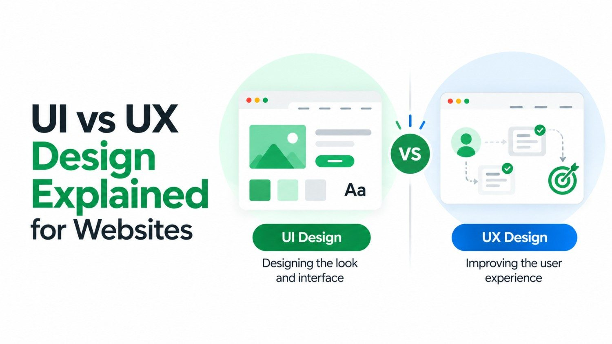

You have probably seen the terms UI and UX thrown around a lot - sometimes together, sometimes interchangeably. But they are not the same thing. Understanding the difference between UI vs UX design is one of the most important distinctions you can make when building or improving a website.
This guide breaks it all down in simple concept - no jargon, no confusion. Whether you are a business owner, a developer, or someone just curious about how good websites are built, this is for you.
What Is UI Design?
UI stands for User Interface. It refers to everything a user sees and interacts with on a digital product - the screens, buttons, icons, typography, color palettes, and layouts. In short, UI design is about how a website looks.
A great UI designer thinks about:
- Visual hierarchy: Which elements should draw the eye first?
- Color and contrast: Do colors align with the brand and pass accessibility standards?
- Typography: Are the fonts readable and consistent across all pages?
- Responsive design: Does the interface look polished on mobile, tablet, and desktop?
- Interactive elements: Do buttons, forms, and menus feel intuitive and look inviting?
UI design is the craft of creating beautiful, consistent, on-brand visual experiences. Think of it as the interior design of a physical store - it should be welcoming, easy to navigate, and reflect who you are.
What Is UX Design?
UX stands for User Experience. It focuses on the overall journey a user goes through when interacting with a product. UX is not just about one screen - it is about the complete flow. In short, UX design is about how a website feels to use.
A UX designer asks questions like:
- User research: Who is the target audience, and what do they need?
- Information architecture: Is the content structured in a logical, findable way?
- User flows: How does a visitor move from landing on the homepage to completing a purchase?
- Usability testing: Are real users getting confused or frustrated at any step?
- Pain points: Where do visitors drop off, and why?
If UI is the interior design, UX is the floor plan. A store can look gorgeous, but if customers cannot find what they came for, they leave.
UI vs UX Design: Key Differences at a Glance
Here is a simple side-by-side comparison to make the distinction crystal clear:
| Aspect | UI Design | UX Design |
|---|---|---|
| Focus | Visual presentation | User journey & satisfaction |
| Output | Screens, components, style guides | Wireframes, user flows, prototypes |
| Tools Used | Figma, Adobe XD, Sketch | Miro, Hotjar, user interviews |
| Goal | Looks beautiful and on-brand | Feels easy and solves real problems |
| Measures | Visual consistency, aesthetics | Task success rate, bounce rate, time on site |
Need a Website That Looks Great AND Converts?
Our team combines strong UI and UX to build websites that attract visitors and turn them into customers.
How UI and UX Work Together
Here is the truth - you cannot have a truly great website with just one of them. UI and UX are deeply intertwined, and the best digital products are built when both disciplines work hand in hand.
Imagine a beautifully designed website where users cannot find the contact form. That is great UI with poor UX. Now imagine a site where the user journey is flawless, but the design looks like it was built in 2004. That is good UX with poor UI. Neither converts well.
In the real world, UI designers and UX designers collaborate throughout a project. The UX designer maps the structure and flow first - essentially creating the blueprint. The UI designer then brings it to life visually. Both iterate based on feedback and testing.
For smaller projects or startups, you will often find a UI/UX designer who handles both roles. But as products grow, these responsibilities typically split into dedicated specialists.
Why UI vs UX Matters for Your Website
If you are building or redesigning a website for your business, getting both right has direct commercial impact. Here is what the data consistently shows:
- Poor UX leads to high bounce rates - visitors leave before exploring your services.
- Weak UI damages brand trust - an outdated design signals an outdated business.
- Good UX improves conversion rates - streamlined flows guide users toward enquiries and purchases.
- Strong UI enhances engagement - attractive, readable pages keep visitors scrolling and exploring.
- Both combined improve Core Web Vitals and user signals that Google uses to rank pages.
For businesses in competitive markets, a website with strong UI and UX design is not a luxury - it is a growth tool. If you are looking for a team that understands both, our web development company in Kerala builds websites with design and user experience at the core of every project.
A Practical UI/UX Design Process for Websites
Good design does not happen by accident. Here is a simplified version of how professional teams approach a web design project:
1. Discovery & Research
This is pure UX territory. The team identifies user personas, studies competitors, and maps out what problems the website needs to solve. Without this step, you are essentially guessing.
2. Wireframing & Information Architecture
UX designers create low-fidelity wireframes - skeleton layouts that define page structure without any visual styling. This is where navigation logic, content hierarchy, and user flows are established.
3. Visual Design & UI Prototyping
UI designers take the wireframes and apply visual design - brand colors, fonts, icons, imagery, and spacing. Prototyping tools allow clickable mockups to be tested before a single line of code is written.
4. Development & Testing
Developers bring the designs to life. UX testing runs alongside - real users interact with the product, and the team iterates based on what they observe.
5. Launch & Continuous Improvement
A good website is never truly "done." Post-launch analytics and heatmaps reveal new insights, and ongoing UX improvements keep the experience sharp and conversion rates climbing.
Conclusion
So, what is the bottom line on UI vs UX design? They are two sides of the same coin. UX shapes the logic and flow of your website. UI shapes the look and feel. One without the other produces a product that either frustrates users or fails to make a strong impression.
If you are investing in a new website or redesigning an existing one, make sure the team you work with understands both disciplines deeply. The difference between a website that just exists and one that actively grows your business often comes down to how seriously UI and UX design were taken during the build.